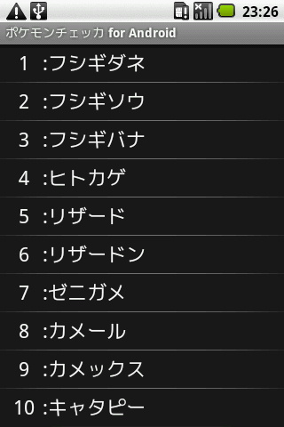
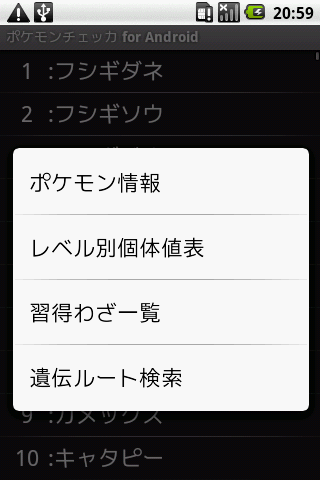
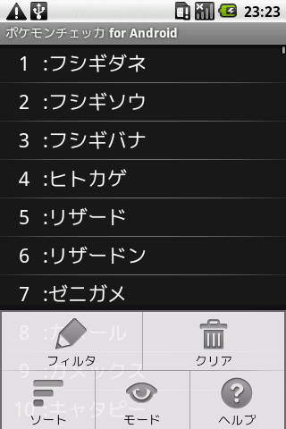
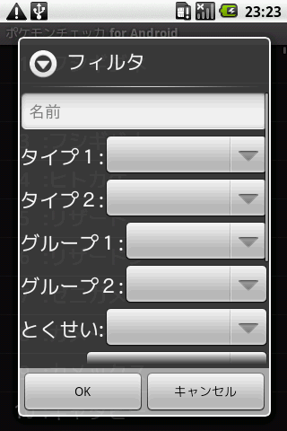
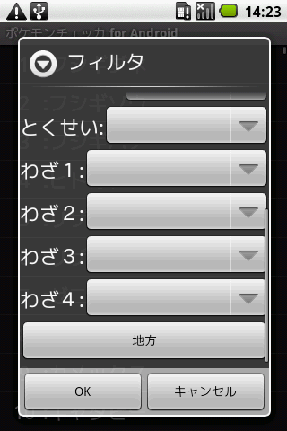
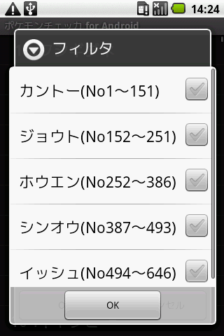
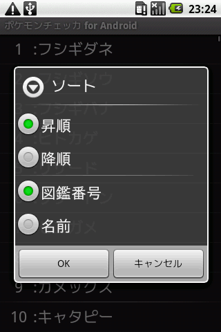

ポケモン一覧
ポケモンチェッカの基点となる画面です。この画面ではポケモン図鑑のようにポケモンが一覧表示され、ポケモンを選択することでさまざまな情報にアクセスすることが出来ます。

クリック時の動作
リスト表示されているポケモンをクリック(タップ)することでポケモン情報に画面が切り替わります。
ロングクリック時の動作
リスト表示されているポケモンを長押し(約１秒)することでそのポケモンの個別メニューが表示されます。表示後選択することで、各画面に切り替わります。

メニューからフィルタリング、フィルタリングのクリア、ソート、他画面への切り替え、ヘルプが行えます。

フィルタリング
フィルタメニューから、名前、タイプ、タマゴグループ、特性、習得わざ、地方によるリストのフィルタリングが行えます。
- 名前は部分一致によるフィルタリングを行います。また入力する名前はひらがな・カタカナどちらでも動作します。
- タイプ１・タイプ２どちらか一方のみ選択した場合は、選択したタイプを持つポケモンを絞り込みます。
- タイプ１・タイプ２で同じタイプを選択した場合は、選択したタイプのみを持つポケモンを絞り込みます。
- タイプ１・タイプ２で異なるタイプを選択した場合、選択したタイプを共に持つポケモンを絞り込みます。
- 習得わざは使用可能ポケモンを絞り込みます。つまり進化前が覚える場合でもリストには表示されます。なお、存在しないわざ名を入力した場合はそれは無視されます。
- 地方は図鑑番号を元に絞り込みます。地方とはポケモンが初めて登場した地方と言うことです。



クリア
フィルタで設定した内容及び、フィルタリング後のリストをリセットします。
ソート
リストの並び替えが行えます。
- 昇順は図鑑番号であれば小さい番号から、名前であれば五十音順にリストを並び替えます
- 降順は図鑑番号であれば大きい番号から、名前であれば五十音の逆順にリストを並び替えます

TOP PAGEへ